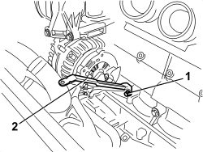
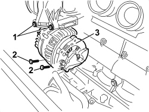
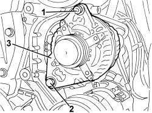
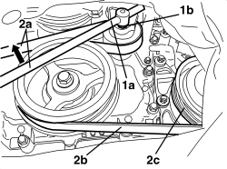
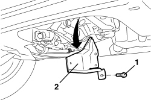
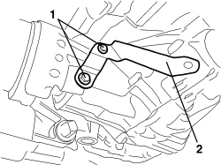
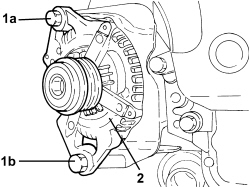
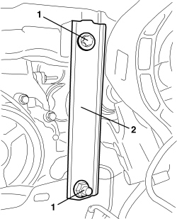
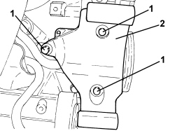

5530A10 ALTERNATOR - R+R
- Path
- Procedures > 55 ELECTRICAL EQUIPMENT > 5530 CURRENT GENERATION > 5530A ALTERNATOR AND COMPONENTS > 5530A10 ALTERNATOR - R+R
- Kind
- repair procedure (removal / refitting; the operation number is the code)
- Applies to
- all engines; all production periods
- Interactive page
- https://sloeber94.github.io/elrnDB-aBrrSpdr/en/#/946002371
Applies to: engines: 2.2 JTS; all production periods
 Removing
Removing
 Refitting
RefittingOp. 4450B04 RIGHT FRONT WHEEL - R.R
Op. 1048A28 VACUUM AIR CIRCUIT RESONATOR PIPE - R+R
Op. 1048A34 HOSE(S) FROM FLOW METER TO AIR SUPPLY CAPACITY CASE - R + R
Op. 1092C26 BELT FROM AIR CONDITIONER COMPRESSOR DRIVING POWER STEERING PUMP - R + R
Op. 1092G10 SINGLE ENGINE BELT - R.R
Op. 1056F17 THROTTLE BODY WITH DVL - R.R.
Op. 1072B50 AIR CHAMBER - R.R.
1. Undo the bolt.
2. Keep the intake chamber mounting bracket.

Applies to: engines: 2.2 JTS; all production periods
1. Undo the nuts and disconnect the electrical connections (1a) and (1b) for the alternator.
Description | Component |
|---|---|
ALTERNATOR |

Applies to: engines: 2.2 JTS; all production periods
- Loosen the bolt retaining the power assisted steering pump.
1. Undo the two upper bolts fixing the alternator.
2. Undo the two lower bolts fixing the alternator.
3. Release the alternator from its housing and extract it.

Applies to: engines: 2.2 JTS; all production periods
Refitting
Removing- Check that the alternator is not damaged.
1. Place the alternator in position and tighten the two upper and lower bolts.
2. Tighten the lower bolts to the specified torque.
3. Tighten the upper bolts to the specified torque.
- Tighten the bolt securing the power steering pump to the recommended torque.
4. Connect the electrical connections for the alternator and tighten the nuts to the recommended torque.

Applies to: engines: 2.2 JTS; all production periods
- Position the mounting bracket for the intake chamber and secure it using the bolt.
Op. 1072B50 AIR CHAMBER - R.R.
Op. 1056F17 THROTTLE BODY WITH DVL - R.R.
Op. 1092G10 SINGLE ENGINE BELT - R.R
Op. 1092C26 BELT FROM AIR CONDITIONER COMPRESSOR DRIVING POWER STEERING PUMP - R + R
Op. 1048A34 HOSE(S) FROM FLOW METER TO AIR SUPPLY CAPACITY CASE - R + R
Applies to: engines: 2.4 JTD 20v; all production periods
Removing
Refitting
Applies to: engines: 2.4 JTD 20v; all production periods
Op. 0010T84 COOLANT FOR AIR CONDITIONING SYSTEM - DEHYDRATE AND REPRESSURIZE
Op. 7055B54 UNDER ENGINE PROTECTION/GUARD - R.R.
Op. 4450B04 RIGHT FRONT WHEEL - R.R
Op. 7055B91 RIGHT FRONT WHEEL ARCH LINER - R.R.
Op. 1092C26 BELT FROM AIR CONDITIONER COMPRESSOR DRIVING POWER STEERING PUMP - R + R
Op. 5040A20 AIR CONDITIONING COMPRESSOR - R+R - INCLUDES FLUID LEVEL CHECK AND TOP UP IF NECESSARY
1. Working from the top of the engine compartment, unscrew electrical connections (1a) and (1b) of alternator (1c).
Description | Component |
|---|---|
ALTERNATOR |
2. Unscrew upper bolt (2a) of alternator (1c).

Applies to: engines: 2.4 JTD 20v; all production periods
1. Raise the vehicle, then unscrew bolts (1a) and remove the air outlet sleeve (1b) from the turbine.
2. Undo the lower alternator bolt.
3. Remove the alternator.

Applies to: engines: 2.4 JTD 20v; all production periods
- If the engine must be removed, proceed as follows:
Op. 1004B10 POWER UNIT WITH MANUAL GEARBOX - R.R
Op. 1092C26 BELT FROM AIR CONDITIONER COMPRESSOR DRIVING POWER STEERING PUMP - R + R
Op. 5040A20 AIR CONDITIONING COMPRESSOR - R+R - INCLUDES FLUID LEVEL CHECK AND TOP UP IF NECESSARY
- Recover the alternator drive belt.
1. Undo the bolts.
2. Remove the tensioner.

Applies to: engines: 2.4 JTD 20v; all production periods
1. Disconnect the electrical connection (1a), undo the nut and disconnect the electrical connection (1b).
Description | Component |
|---|---|
ALTERNATOR |

Applies to: engines: 2.4 JTD 20v; all production periods
1. Undo the upper bolt.
2. Undo the lower bolt.
3. Keep the alternator releasing the retainers for the cables.

Applies to: engines: 2.4 JTD 20v; all production periods
Refitting
Removing- Check that the alternator is not damaged.
- If the engine has been removed, proceed as follows:
1. Place the alternator in the housing.
2. Tighten the lower bolt.
Component | Fastening | dia | Value (daNm) | Validity |
|---|---|---|---|---|
ALTERNATOR | Bolt | M12x1.25x120 | 6.3 ÷ 7.7 | 2.4 JTD 20V |
3. Tighten the upper bolt.
Component | Fastening | dia | Value (daNm) | Validity |
|---|---|---|---|---|
ALTERNATOR | Bolt | M10x1.25x45 | 4.5 ÷ 5.5 | 2.4 JTD 20V |

Applies to: engines: 2.4 JTD 20v; all production periods
- Connect the electrical connections for the alternator.
- Position the tensioner and secure it using the bolts.
Op. 5040A20 AIR CONDITIONING COMPRESSOR - R+R - INCLUDES FLUID LEVEL CHECK AND TOP UP IF NECESSARY
Op. 1092C26 BELT FROM AIR CONDITIONER COMPRESSOR DRIVING POWER STEERING PUMP - R + R
Op. 1004B10 POWER UNIT WITH MANUAL GEARBOX - R.R
- If only the alternator has been removed, proceed as follows:
1. Position the alternator and tighten the lower bolt.
2. Position the air outlet sleeve (2a) from the turbine and tighten bolts (2b).
3. Tighten the alternator upper bolt.
4. Tighten the alternator fixing bolts to the recommended torque.
Component | Fastening | dia | Value (daNm) | Validity |
|---|---|---|---|---|
ALTERNATOR | Bolt | M12x1.25x120 | 6.3 ÷ 7.7 | 2.4 JTD 20V |
Component | Fastening | dia | Value (daNm) | Validity |
|---|---|---|---|---|
ALTERNATOR | Bolt | M10x1.25x45 | 4.5 ÷ 5.5 | 2.4 JTD 20V |
5. Connect the electrical connections for the alternator.


Applies to: engines: 2.4 JTD 20v; all production periods
Op. 5040A20 AIR CONDITIONING COMPRESSOR - R+R - INCLUDES FLUID LEVEL CHECK AND TOP UP IF NECESSARY
Op. 1092C26 BELT FROM AIR CONDITIONER COMPRESSOR DRIVING POWER STEERING PUMP - R + R
Op. 7055B91 RIGHT FRONT WHEEL ARCH LINER - R.R.
Op. 4450B04 RIGHT FRONT WHEEL - R.R
Op. 7055B54 UNDER ENGINE PROTECTION/GUARD - R.R.
Op. 0010T84 COOLANT FOR AIR CONDITIONING SYSTEM - DEHYDRATE AND REPRESSURIZE
Applies to: engines: 3.2 JTS; all production periods
Removing
Refitting- Position the vehicle on a lift.
- Raise the vehicle.
Op. 7055B54 UNDER ENGINE PROTECTION/GUARD - R.R.
Op. 4450B04 RIGHT FRONT WHEEL - R.R
Op. 7055B91 RIGHT FRONT WHEEL ARCH LINER - R.R.
Op. 7055B66 ENGINE COMPARTMENT DUST COVER IN RIGHT FRONT WHEEL ARCH - R.R.
Op. 2710A10 DRIVESHAFT WITH JOINTS (ONE), L/H OR R/H - R + R
Op. 1076B82 LEFT EXHAUST PIPE BETWEEN CATALYTIC PRECONVERTER AND CONVERTER - R.R.
1. Apply a wrench (1a) to the service belt tensioner grip (1b).
2. Turn the wrench (1a) in the arrowed direction (2a) and loosen the service belt (2b), then disconnect the belt from compressor pulley (2c).

Applies to: engines: 3.2 JTS; all production periods
1. Undo the three bolts.
2. Remove the alternator heat shield.

Applies to: engines: 3.2 JTS; all production periods
1. Undo the two bolts.
2. Remove the bracket fixing the exhaust to the front differential.

Applies to: engines: 3.2 JTS; all production periods
1. Undo the nut and disconnect the leads from the alternator.
Description | Component |
|---|---|
ALTERNATOR |

Applies to: engines: 3.2 JTS; all production periods
1. Undo the upper bolt (1a) and the lower bolt (1b).
2. Move the alternator.

Applies to: engines: 3.2 JTS; all production periods
1. Undo the two bolts.
2. Remove the wheel arch bracket.

Applies to: engines: 3.2 JTS; all production periods
1. Undo the three bolts.
2. Remove the alternator mounting.

Applies to: engines: 3.2 JTS; all production periods
- Keep the alternator.
Applies to: engines: 3.2 JTS; all production periods
Refitting
Removing- Check that the alternator is not damaged.
- Position the alternator mounting and secure it using the bolts.
Component | Fastening | dia | Value (daNm) | Validity |
|---|---|---|---|---|
ALTERNATOR SUPPORT | Bolt | M10 | 4.5 ÷ 5.5 | 3.2 JTS |
Component | Fastening | dia | Value (daNm) | Validity |
|---|---|---|---|---|
ALTERNATOR SUPPORT | Bolt | M8 | 2.2 ÷ 2.6 | 3.2 JTS |
- Position the alternator, connect the electrical connections and secure it using the screw and the bolt.
Component | Fastening | dia | Value (daNm) | Validity |
|---|---|---|---|---|
ALTERNATOR | Bolt | M10 | 4.5 ÷ 5.5 | 3.2 JTS |
Component | Fastening | dia | Value (daNm) | Validity |
|---|---|---|---|---|
ALTERNATOR | Nut | M12 | 8.5 ÷ 10.5 | 3.2 JTS |
- Position the wheel arch bracket and secure it using the bolts.
- Position the bracket securing the exhaust to the front differential and fasten it using the bolts.
- Position the alternator heat shield and secure it using the bolts.
- Using the spanner on the tensinoer, loosen the service belt and fit it on the pullies.
Op. 1076B82 LEFT EXHAUST PIPE BETWEEN CATALYTIC PRECONVERTER AND CONVERTER - R.R.
Op. 2710A10 DRIVESHAFT WITH JOINTS (ONE), L/H OR R/H - R + R
Op. 7055B66 ENGINE COMPARTMENT DUST COVER IN RIGHT FRONT WHEEL ARCH - R.R.
Op. 7055B91 RIGHT FRONT WHEEL ARCH LINER - R.R.
Topics linked from this page (17)
- 0010T84 COOLANT FOR AIR CONDITIONING SYSTEM - DEHYDRATE AND REPRESSURIZE
- 1004B10 POWER UNIT WITH MANUAL GEARBOX - R.R
- 1048A28 VACUUM AIR CIRCUIT RESONATOR PIPE - R+R
- 1048A34 HOSE(S) FROM FLOW METER TO AIR SUPPLY CAPACITY CASE - R + R
- 1056F17 THROTTLE BODY WITH DVL - R.R.
- 1072B50 AIR CHAMBER - R.R.
- 1076B82 LEFT EXHAUST PIPE BETWEEN CATALYTIC PRECONVERTER AND CONVERTER - R.R.
- 1092C26 BELT FROM AIR CONDITIONER COMPRESSOR DRIVING POWER STEERING PUMP - R + R
- 1092G10 SINGLE ENGINE BELT - R.R
- 2710A10 DRIVESHAFT WITH JOINTS (ONE), L/H OR R/H - R + R
- 4450B04 RIGHT FRONT WHEEL - R.R
- 5040A20 AIR CONDITIONING COMPRESSOR - R+R - INCLUDES FLUID LEVEL CHECK AND TOP UP IF NECESSARY
- 7055B54 UNDER ENGINE PROTECTION/GUARD - R.R.
- 7055B66 ENGINE COMPARTMENT DUST COVER IN RIGHT FRONT WHEEL ARCH - R.R.
- 7055B91 RIGHT FRONT WHEEL ARCH LINER - R.R.
- 7210E10 R.R. FRONT BUMPER
- A010 ALTERNATOR
Topics that link to this page (10)
- K040 BATTERY CHARGING WARNING LIGHT NOT WORKING
- K142 RECHARGING WARNING LIGHT ON
- 5520BA ENGINE IGNITION SYSTEM CHECK
- 5530BB BATTERY VOLTAGE CHECK
- 5530BB BATTERY VOLTAGE CHECK
- 5040A26 AIR CONDITIONING COMPRESSOR SUPPORT - R.R.
- E5010 IGNITION AND RECHARGING - WIRING DIAGRAM
- E5010 IGNITION AND RECHARGING - COMPONENT LOCATION
- E5010 IGNITION AND RECHARGING - WIRING DIAGRAM
- E5010 IGNITION AND RECHARGING - COMPONENT LOCATION